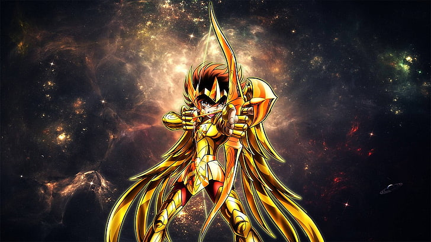
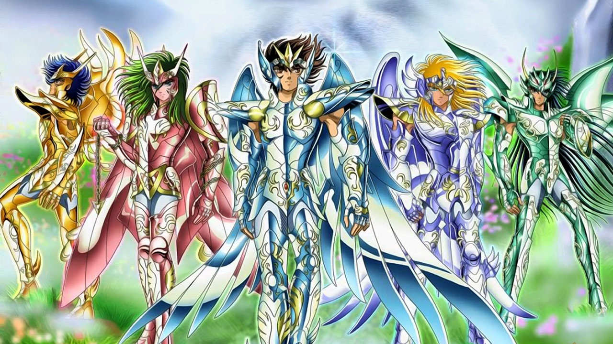

SAINT SEIYA "LOS CABALLEROS DEL ZOODIACO" S
El caballero "seiya de pegaso"
vistiendo la poderosa armadura DORADA de ZAGITARIO
su verdadero portador fue el caballero "AIOROS"
quien sacrifico su vida en pro de la justicia

Esta es la imagen del primer mensaje
los caballeros lejendarios
Subtitulo del mensaje dos
Este es el texto de mi segundo mensaje